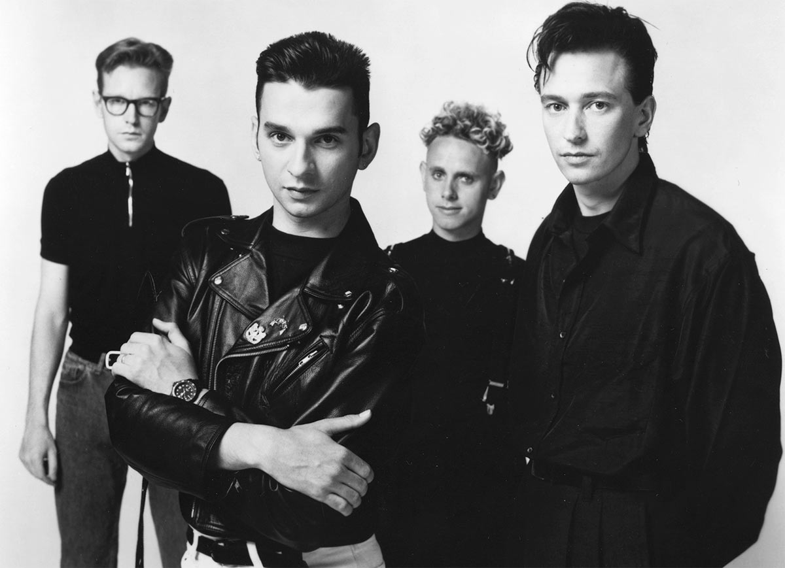
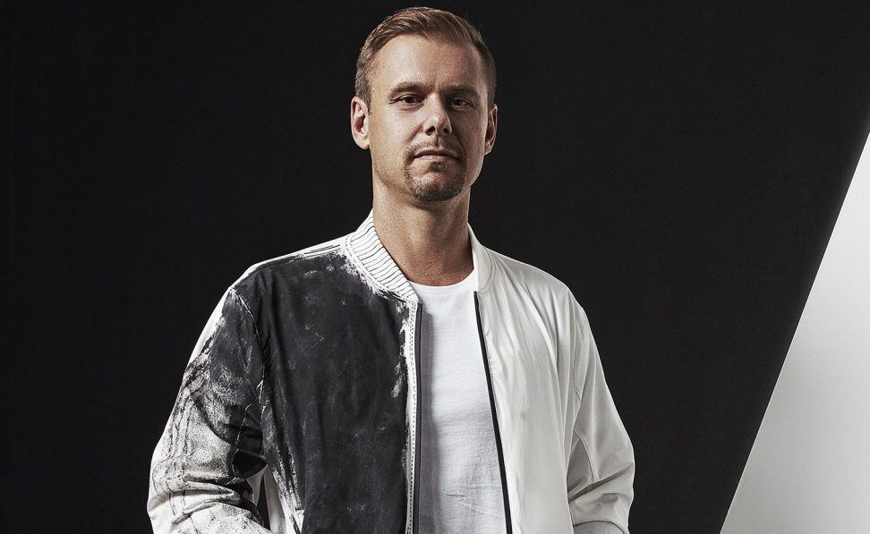
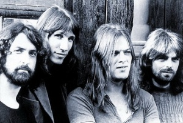
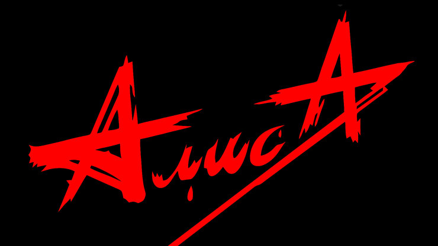
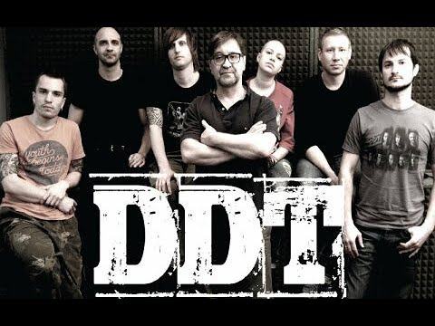
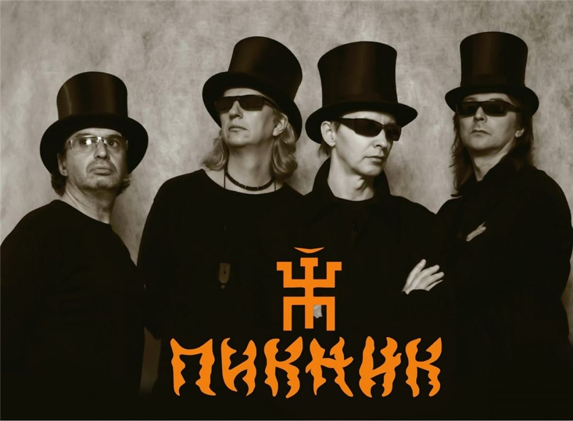

Depeche Mode ist eine englische Synth-Rock- bzw. Synthie-Pop-Gruppe.

Armin van Buuren a Dutch DJ and record producer..

Pink Floyd are an English rock band formed in London in 1965.

«Алиса» — советская и российская рок-группа, образованная в 1983 году в Ленинграде.

«ДДТ» (DDT) — советская и российская рок-группа, основанная летом 1980 года в Уфе.

«Пикни́к» — советская и российская рок-группа, основанная в Ленинграде в 1978 году.